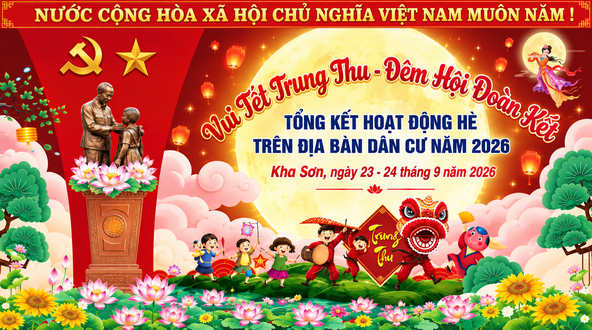

HỘI TRẠI TRUNG THU XÃ KHA SƠN 2026
“Đêm hội trăng rằm – Thắp sáng ước mơ”

Giới thiệu chung
Hội trại Trung thu xã Kha Sơn năm 2026 là hoạt động dành cho thiếu nhi trên địa bàn, được tổ chức trong không khí vui tươi, sôi nổi và đầy màu sắc của mùa Trung thu. Hội trại diễn ra trong 1,5 ngày, từ ngày 23 đến ngày 24/9/2026 tại Sân vận động xã Kha Sơn, với sự tham gia của 25 xóm trên địa bàn xã, tạo nên một không gian giao lưu và gắn kết rộng lớn dành cho các em thiếu nhi.
Chương trình hội trại
23/9/2026
Ngày 13/8 âm lịch
Ngày 13/8 âm lịch
Ngày thứ nhất
07h00Phát lệnh cắm trại, các đơn vị cắm trại và trang trí trạiĐoàn Thanh niên
10h00Tổ chức chấm trại lần 1Ban Giám khảo và Thư ký
14h30 – 16h30Đồng diễn nghi thức độiBan tổ chức
19h30 – 20h00Khai mạc hội trạiBan tổ chức
20h00 – 22h30Thi văn nghệ (tặng quà nếu có)Ban tổ chức
24/9/2026
Ngày 14/8 âm lịch
Ngày 14/8 âm lịch
Ngày thứ hai
07h00 – 09h30Thi kéo coĐoàn Thanh niên
09h30 – 10h30Chấm trại lần 2Ban Giám khảo và Thư ký
10h30 – 11h00Bế mạc và trao giảiBan tổ chức
11h00Phát lệnh dỡ trạiBan tổ chức
Mục tiêu
Góp một sắc màu lung linh vào mùa trăng lớn của quê hương, thắp sáng không gian văn hóa truyền thống và tiếp thêm sức mạnh cho những hoài bão, ước mơ của thế hệ mầm non.